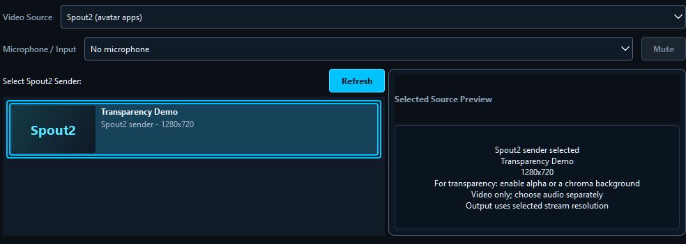
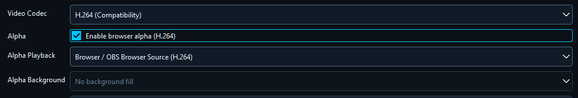

Spout2 · Browsers · OBS
Keep your background transparent.
Bring your avatar or graphics into a browser or OBS. Follow these three steps; the OBS plugin is optional.
- Game Capture 0.2.68+
- VDO.Ninja v31.5+
- A Windows app with transparent Spout2 output
Select your Spout2 source
Spout2 sends video from your avatar or graphics app into Game Capture.
- In your source app, turn on Spout / Spout2 output and enable its transparent background. Keep that app running.
- In Game Capture, set Video Source to Spout2 (avatar apps).
- Click your app’s sender in the list. Click Refresh if it hasn’t appeared yet.

Ready? Your sender is highlighted and its name appears on the right.
Need sound too? Spout2 carries video only. Choose your microphone or audio source separately.
Enable browser transparency
Stop any active stream, then turn on Show advanced settings. Find the video controls and make these three changes, in this order:
- Video CodecH.264 (Compatibility)
- Alpha PlaybackBrowser / OBS Browser Source (H.264)
- AlphaCheck Enable browser alpha (H.264)

Ready? The browser alpha box is checked. Selecting the playback mode alone is not enough.
Start with 1280 × 720 at 30 FPS. Increase quality after you have a working picture.
Go live and open your viewer
- Enter a stream name in Stream / URL.
- Click Go Live.
- Click Copy Link to copy your viewer link. Keep the whole link, including everything after
?.
Where do you want to watch?
In a web browser
- Open Chrome or Edge. Paste the copied link into the address bar and press Enter.
- Allow playback if the browser asks.
The viewer needs VDO.Ninja v31.5+. A plain page background can look opaque; use the OBS steps below to see your feed over another picture.
In OBS Browser Source
- In OBS, click Sources → + → Browser, name the source, and click OK.
- Paste the viewer link into URL. Set Width and Height to your stream size, then click OK.
- Right-click this source. Choose Blending Method → SRGB Off so translucent colors look right.
- Place an image or color source below the Browser Source in the Sources list.
You should see: your avatar or graphics over the background source, with no solid rectangle around them.
Use a VDO.Ninja v31.5+ viewer. This Browser Source route does not need the VDO.Ninja OBS plugin.
Need a hand?
Open only the item that matches what you see.
My sender is missing, or the picture is black
- Keep the source app running with Spout2 output enabled, then click Refresh.
- In Windows Graphics settings, put Game Capture and the source app on the same GPU.
I see a solid background around my avatar
- Enable transparent output in the source app. Game Capture cannot remove a background already drawn into the video.
- Check the three settings in step 2.
- In OBS, put a background source below the Browser Source. Use SRGB Off if translucent edges look washed out.
The viewer connects but shows no video
- Check both versions: Game Capture 0.2.68+ and VDO.Ninja v31.5+. Updating Game Capture does not update the viewer.
- Enable graphics acceleration / WebGL in your browser, then reconnect.
- Copy a fresh viewer link from Game Capture. Older viewers cannot display this transparency mode.
I want a sharper or smoother picture
- Try 720p60 or 1080p30 after 720p30 works. The maximum is 1920 × 1080 at 60 FPS.
- Use hardware encoding where available. Higher quality needs more encoding power and upload bandwidth.
- In OBS, match the Browser Source frame rate to your stream. Check lip sync before going live.
I already use the VDO.Ninja OBS plugin
You can keep using its native transparency mode instead of Browser Source:
- Stop the stream. Set Alpha Playback → OBS native receiver.
- Choose H.264 or VP9 (OBS Alpha Preview) and enable alpha.
- In the plugin, enable Use Native Receiver (Experimental).
This mode needs the plugin for transparency. Ordinary browser viewers receive color video only.